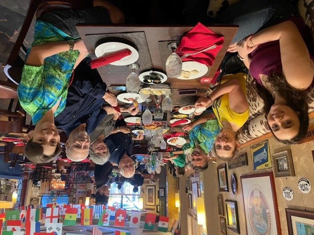

| These are empanadas. Empanadas are one of my favorite foods. The dough could be filled with chicken/pork/beef/vegetables you name it! | |
| These are milanesas. Milanesas could be chicken or steak. The meat would be fried and convered in a crunchy outer shell! | |
| Flan is a common dessert in Puerto Rico and Argentina. It is a baked dish with an open-topped pastry case with a savory or sweet filling. | |
| In this image my family and a few friends are eating dinner at a Argentinian restaurant. Some of the foods that were eaten are empanadas and milanesas. (Like the ones above!) |
 |
| In this image my family are eating some pork straight off the pig, in Puerto Rico the locals call it lechon. One of the best parts about Lechon is that the pork comes with cooked skin and tastes sooo good! |